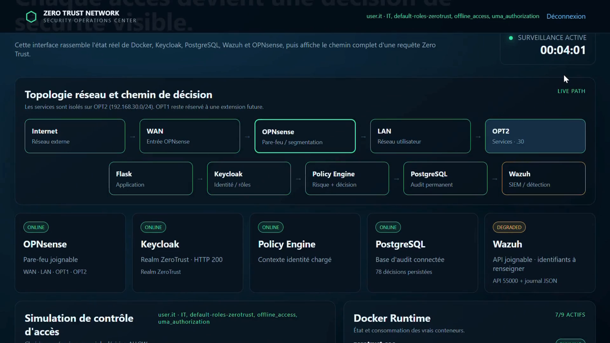

ZERO
TRUST
Designing a security environment where access isn't assumed — identity, context and permissions matter every time.
CYBERSECURITY INTERNSHIP · 3S · 2026
Beyond segmentation and IAM, I built a live SOC dashboard that pulls real status from Docker, Keycloak, OPNsense, PostgreSQL and Wazuh — then runs every access request through a custom policy engine that scores risk in real time and explains, in plain language, why it allowed or denied it.

VERIFY. identity / access / network